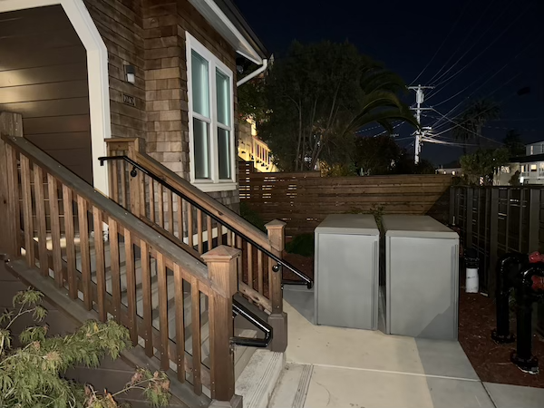
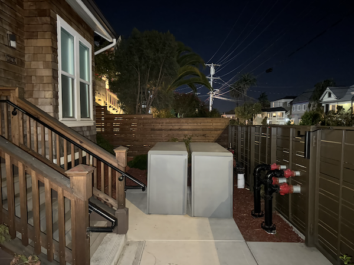

|
|
|
|  |  |
How do we recover homographies?
By definition, it is the matrix H, taken from lecture:
If we fix the bottom right element to be 1, it turns out we can solve for the matrix's elements with the following equation:
|
|
|
We can define the point correspondences using the original, front-facing image. Then, we'll use the homography to warp the angled image to the rectangle.
This sanity check lets us know that our transformation works as intended!
Let's just do one more to be extra sure.
|
|
|
|
The only reason why this is not perfectly rectangular is because of the way I selected the corner points in the slanted image. Even if I hardcode the corners in the target warp to be a perfect rectangle as such, it still fails to be a precise rectangle. Unfortunately it's very difficult for me to be that precise, so I'll just leave it at that.
This is a panorama of my room.
This is a panorama of the porch.
This is a panorama of Moffitt at night, including the cafe building on the right that is covered up.
Now I have to admit that the image quality gets progressively worse on the right. This is because I progressively added the photos on the left, and with forward warping the frequency on the right pixels gradually became lower.